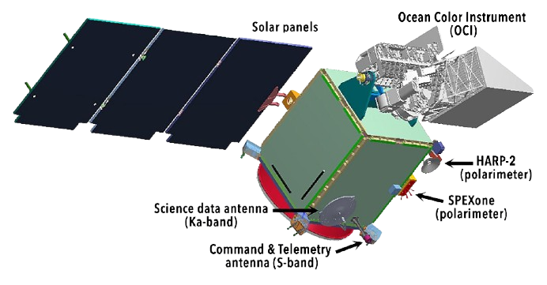

PACE Mission Overview
Mission History: After being nearly canceled in 2018, PACE was restored by Congress. The spacecraft and main instruments were built by NASA's Goddard Space Flight Center. SpaceX launched PACE on a Falcon 9 rocket on February 8, 2024. The mission's total cost was $964 million.
Science Goals: PACE collects data on ocean color, aerosols, and clouds to advance climate research and answer new scientific questions. Its instruments allow for detailed monitoring of ocean ecosystems and their interaction with the atmosphere.

Key Instruments:
Ocean Color Instrument (OCI): Measures light properties across the electromagnetic spectrum, allowing scientists to study ocean color, marine biology, and climate patterns.
SPEXone: A polarimeter that accurately measures aerosols, aiding in understanding their effect on climate and ecosystems.
HARP2: Captures detailed data on aerosol particles and cloud properties, enhancing knowledge of air quality and weather patterns.
Launch and Operations: PACE was launched into a sun-synchronous orbit, enabling consistent Earth observation. It entered a commissioning period post-launch, after which it began collecting operational data.
Fun Fact: One of the main goals of the PACE mission is to help improve our understanding of how phytoplankton influences the ocean's carbon cycle. These tiny organisms are responsible for producing at least 50% of the oxygen we breathe!